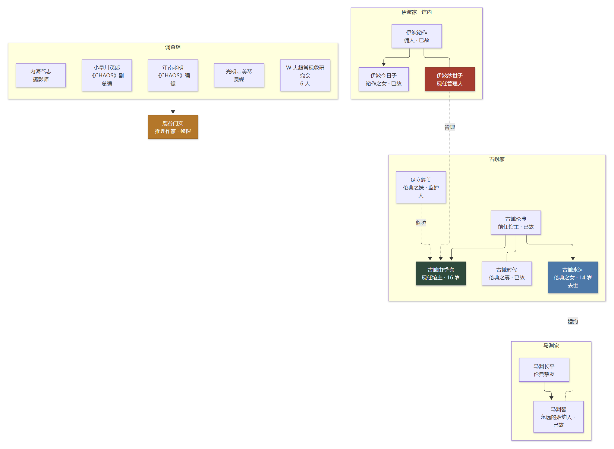
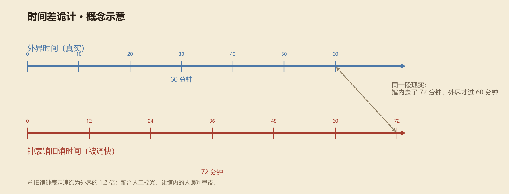

钟表馆事件
時計館の殺人 · 绫辻行人 · 馆系列 第五作
镰仓的深山里，一座由中村青司设计的馆：上百个钟表指向同一时刻，馆外的钟塔却没有指针。 十年前，馆主最心爱的女儿死去，古峨家又接连走了六个人；十年后，一群调查者走进这座馆， 三天之后，有人再也没能走出来——因为在这座馆里，时间本身被调过。
01作品档案
| 书名 | 钟表馆事件（時計館の殺人） |
|---|---|
| 作者 | 绫辻行人（1960 年生，京都；京都大学教育系；1987 年《十角馆事件》出道） |
| 系列 | 「馆系列」第五作（前有《十角馆》《水车馆》《迷宫馆》《人偶馆》） |
| 初版 | 1991 年 |
| 中文版 | 新星出版社（2014 年刘羽阳译本；2024 年新版） |
| 类型 | 新本格推理 / 建筑推理 / 时间诡计 / 双线叙事 |
| 主要荣誉 | 1992 年第 45 届日本推理作家协会奖；被视为新本格推理的里程碑之一 |
| 一句话 | 让「时间」成为凶器的建筑推理——你看到的钟，全都在骗你。 |
馆系列的每一座馆都由神秘建筑师中村青司设计，而《钟表馆事件》是其中把「建筑」与「时间」 结合得最彻底的一部。它不靠血腥取胜，而是靠一个朴素的念头让人背后发凉： 如果一座房子里所有的钟都走快了，住在里面的人，还会知道现在几点吗？
02舞台与传说
钟表馆
钟表馆坐落在镰仓郊外的寂静山林中，由中村青司设计，分为「旧馆」与「新馆」。 馆内陈列着上百个钟表，它们以不可思议的方式指向同一时刻、以相同速度行进； 馆外竖立着一座没有指针的钟塔，钟铃从未响起过。
十年前的悲剧
故事发生的十年前，馆主古峨伦典最心爱的女儿古峨永远去世，此后古峨家另有六人相继死亡。 从那以后，钟塔下开始出现少女幽灵的传闻——据说她会在静谧的森林里徘徊。
三天通灵会
十年后，以超自然现象报道闻名的《CHAOS》杂志社，带着 W 大学超常现象研究会的六名成员 和一位通灵师，进入钟表馆举办为期三天的通灵会。与世隔绝的三天里，参与者一个接一个倒下—— 死神的指针，最终划破了冷酷的表盘。
「钟表馆里的钟，全都指向同一个时刻。」
这句话一开始只是怪谈，读到后面才知道，它其实是一句提示。 —— 本页按作品设定整理
03登场人物
- 古峨伦典——钟表馆前任馆主，古峨精钟公司前任会长，已故。
- 古峨时代——伦典之妻，已故。
- 古峨永远——伦典之女，十年前去世，年仅十四岁。
- 古峨由季弥——伦典之子，钟表馆现任馆主，十六岁。
- 足立辉美——伦典之妹，由季弥的监护人。
- 马渊长平——伦典的挚友；其子马渊智是永远的婚约人，已故。
- 伊波裕作——钟表馆的佣人，已故；其妻伊波纱世子是现在的管理人。
- 野之宫泰齐——伦典信任的占卜师。
- 田所嘉明——钟表馆的佣人。
- 《CHAOS》调查组——副总编小早川茂郎、编辑江南孝明、摄影师内海笃志、灵媒光明寺美琴，以及 W 大超常现象研究会的六名成员。
- 鹿谷门实——初露头角的推理作家，本书的侦探（即馆系列名侦探「岛田洁」）。

04案件年表
| 十年前 | 古峨永远去世；此后古峨家另有六人相继死亡；钟塔下开始流传少女幽灵的传闻。 |
|---|---|
| 十年后 · 7 月 | 《CHAOS》调查组与 W 大超常现象研究会进入钟表馆，举行为期三天的通灵会。 |
| 第 1 天 | 通灵会开始；馆内的钟表、钟塔与时间感，成了所有人共处的背景。 |
| 第 2 天 | 参加者接连遇害，尸体发现地点与死亡时间开始出现矛盾。 |
| 第 3 天 | 杀戮走向终点，旧馆与新馆两条时间线在最后交汇。 |
| 结局 | 鹿谷门实解开「时间」之谜，真相揭晓。 |
这本书的时间线是最容易被绕晕的部分：旧馆里发生的杀人事件，与新馆里进行的降灵会， 被作者拆成两条线交叉叙述。你以为两件事同时发生，其实两边的「现在」根本不在同一个时刻—— 这正是本书最大的机关。
05真相
⚠ 点开查看剧透：时间差、凶手与双线叙事
整本书的核心只有一句话：钟表馆旧馆的时间，被调快了。 旧馆的钟表走速约是外界的 1.2 倍，再加上人为控制光线、制造昼夜交替的假象， 住在旧馆里的人会不知不觉地失去真实的时间感。

凶手是谁
凶手是钟表馆的管理人伊波纱世子。她熟悉这座馆的每一处结构、每一只钟， 也有足够的时间与身份去布置一切。
她做了什么
- 让旧馆的钟表走快，并破坏、调乱钟表与控制系统，让馆内人失去可靠的计时工具；
- 摘掉钟塔的指针、收走手表，掐断一切与外界对时的可能；
- 在饮用水里掺入低剂量安眠药，削弱受害者的时间感与警惕；
- 用耳机（实为窃听器）监听动静，用安眠药控制节奏；
- 刻意制造尸体发现地点的混乱，让死亡时间变得模糊；
- 把嫌疑引向古峨由季弥——那个被所有人当作「怪孩子」的少年。
双线叙事的机关
读者跟着两条线走：旧馆里的连续杀人，新馆里的降灵会。作者用交叉叙事让你默认两件事同时发生， 实际上两条线的时间并不同步。等到最后两条时间线对齐，你才会发现—— 自己一直被「钟表馆的时间」牵着走。
为什么是「永远」
十年前的死亡与旧馆的时间秘密有关。为了保住这个秘密，连「永远的死因」都被动过手脚。 这本书的温柔与残酷都在这里：所有精密的诡计，最后都指向一个父亲对女儿的执念。
06诡计解剖
⚠ 点开查看剧透：时间、建筑与叙事的三重机关
1. 时间诡计：让所有人「看错表」
无指针的钟塔、走快的旧馆钟表、被收走的手表——三样东西合起来，就是一座「没有正确时间的房子」。 读者和馆内人共享同一套错误信息，于是所有「不在场证明」都建立在错误的时间上。
2. 建筑诡计：中村青司的馆
旧馆与新馆的布局、秘道与隐藏房间，让「谁在哪儿」「尸体在哪儿」变得暧昧。 建筑不只是舞台，它本身就是诡计的一部分——这是馆系列最迷人的地方。
3. 叙事诡计：两条时间线
旧馆杀人线与新馆降灵会线交叉叙述，读者会自然地把它们当成「同时发生」。 时间差一旦成立，读者对「第几天、几点」的判断就全错了。
4. 遗言诗：埋在开头的时间提示
古峨伦典留下的遗言诗，是全书最重要的伏笔之一：它暗示的不是凶手，而是「时间」本身。 读第二遍时，你会发现自己早在第一章就被提醒过。
5. 侦探：不揭发，只解谜
鹿谷门实（岛田洁）是馆系列的老侦探：他不把凶手交给警察，而是希望对方自己走出来。 这种「解谜而非审判」的态度，让结局多了一层人情味。
07伏笔与名场面
这本书的伏笔大多和「时间」有关：钟表指向同一时刻、钟塔没有指针、手表被摘走、 昼夜来得不太对劲……第一次读只觉得是气氛，第二次读才发现全是线索。 最妙的是，作者并没有刻意藏起「时间」这个词——他把提示放在你眼前，赌你不会当真。
「钟表馆的钟，全都指向同一个时刻。」
当所有钟都错了，唯一正确的那个时间，反而成了最不可信的东西。 —— 本页按作品主题整理
08评价与定位
《钟表馆事件》于 1992 年获得第 45 届日本推理作家协会奖，被视为新本格推理的里程碑之一， 也被认为是「时间操控」类建筑推理的代表作。它把本格的逻辑、哥特式的氛围与一座会骗人的钟表馆 缝在一起，伏线回收得严丝合缝。
和《如首无作祟之物》放在一起看很有意思：首无玩的是「叙述者是谁」， 钟表馆玩的是「现在几点」。一个替换身份，一个替换时间——都是让你在读完之前， 对自己看到的东西深信不疑。
- 适合：新本格与建筑推理爱好者、时间诡计爱好者、喜欢「读书时被绕进去」的人。
- 不适合：讨厌多线叙事与时间跳跃的读者；只想看快节奏血腥场面的读者。
- 阅读建议：第一次读不要查任何资料；留意每一处「时间」的描写；读完再回来对照本页的时间图。
09参考资料
- 绫辻行人《钟表馆事件》新星出版社中文版（刘羽阳 译），小说正文（人物表、内容简介与诡计框架）。
- 百度百科「钟表馆事件」词条（2014 / 2024 版）：出版信息、人物年龄表、核心诡计概述。
- QQ 阅读《绫辻行人05：钟表馆事件》「主要登场人物」章节：人物身份与年龄。
- 百度百科「岛田洁」词条：馆系列侦探设定与《钟表馆事件》中的身份。
- 本页为二次创作解说，情节概述与观点以原作与公开资料为准；如与原文有出入，以原作小说为准。